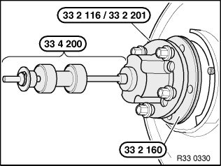

33 41 005 Replacing Left Drive Flange on Rear Axle Shaft
33 41 005 Replacing left drive flange on rear axle shaftSpecial tools required:
Necessary preliminary tasks:
^ Remove output shaft
^ Remove brake disc
^ Remove pulse generator
Important!
Check sensor head and line from pulse sensor prior to installation for external damage, replacing if necessary.

Force drive flange with special tools 33 2 116 / 33 2 201, 33 2 160, 33 4 200 and 5 wheel bolts out of wheel bearing.
Note:
Rounded inside edge of special tool 33 2 160 must point to drive flange.
Important!
The wheel bearing is destroyed when the drive flange is removed and can not be reused!
Replace wheel bearing.
Installation:
Install output shaft.
Oil drive flange lightly and attach to splines of output shaft.
Draw drive flange into wheel bearing.
After installation:
^ Adjusting handbrake